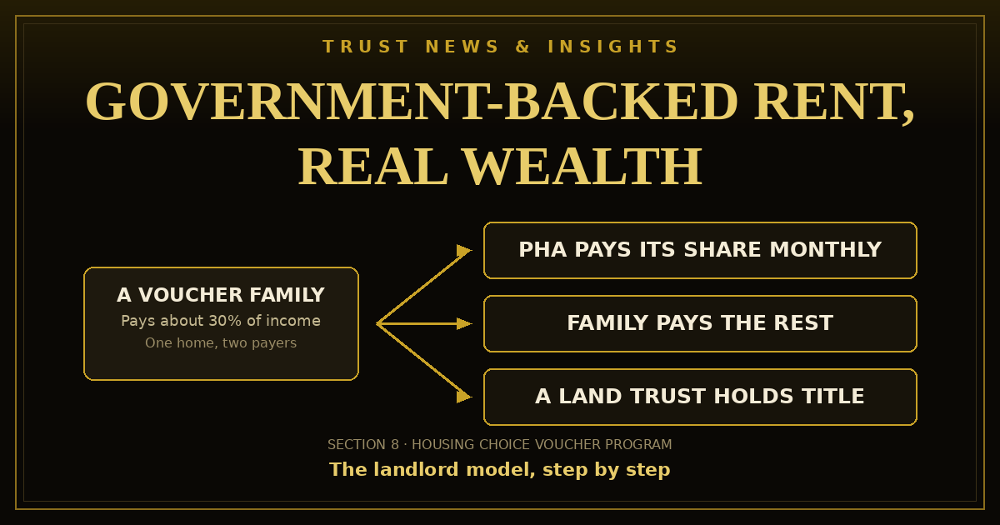

A short video says affordable housing is wealth hiding in plain sight, because millions are waiting and the government stands behind the rent. The pitch is a masterclass — but the model underneath it is real, documented, and older than social media: the Section 8 landlord model. Here are the verified numbers, the actual steps, and the trust structure that holds the property for the long term.

A one-minute video by the creator HeavHaus is making the rounds with a simple argument: affordable housing is wealth hiding in plain sight, because the waiting list for it is enormous and the government stands behind the rent. The video itself teaches no steps — it ends by pointing viewers to a paid masterclass. But the model it is pointing at is real and fully documented: the federal Housing Choice Voucher program, still widely called Section 8, and the landlords who rent to the families it serves. This is that model, from the sources.
Start with the scale, because the scale is the opportunity. HUD describes the voucher program as the nation's largest rental assistance program, serving approximately 2.3 million households a year; HUD research puts the people housed at more than five million. Demand dwarfs that supply: only about one in four eligible households receives any federal rental assistance at all, waiting lists at local housing authorities commonly run for years, and Harvard's Joint Center for Housing Studies counted 8.5 million very-low-income renter households with severe housing problems that received no assistance in 2021. A round '7 million on the waiting list' figure circulates in videos like this one; HUD publishes no single national waiting-list count, so treat it as rhetoric. The documented picture needs no exaggeration: millions of families await a government-backed rent payment, and there are not enough homes offered to them.
A family with a voucher shops the private market for a home whose owner will participate. The family pays roughly 30% of its adjusted income toward rent and utilities. The local public housing agency — the PHA — pays the rest of the approved rent directly to the landlord, every month, under a Housing Assistance Payments (HAP) contract between the agency and the owner. That split is the whole engine: your second payer is a government agency under contract.
Two caps keep it disciplined. The rent cannot exceed the agency's payment standard, set from HUD's Fair Market Rents for the area (generally 90–110% of that figure), and the specific rent must pass a rent reasonableness test against similar unassisted homes nearby. And before any payment flows, the home must pass the agency's inspection for health and safety — heat, hot water, safe wiring, intact windows and locks, no lead-paint hazards — with re-inspections on the agency's schedule. The landlord still screens applicants with their own lawful criteria, signs the lease, and enforces it; the agency verifies eligibility, not tenant quality.
No federal license exists for this. What exists is a sequence, and doing it out of order is where beginners lose months:
A rental home is three things at once: an asset, a liability magnet, and a future estate problem. The stack this site teaches gives each job its own layer. The land trust holds title — ownership stays private, and the property can pass to your beneficiaries without probate. The holding entity signs leases and collects rent, keeping the operational risk in its own box. The family trust holds the beneficial interests above both, so rents flow up through the same waterfall the Trust Fund Playground lets you model before you build the real thing in the Trust Builder. The site's Land Trusts section walks the real-estate version of this stack step by step.
The stack also makes Step 2 honest. An entity that owns assets, keeps its own books, and holds title through a trust is a more credible borrower than an individual buying in their own name — that is the true part of 'fund it with your business.'
Illustration only — scenario arithmetic, not a promise. Take one sound home bought for $150,000 with $30,000 down, rented at $1,400 a month within the agency's payment standard, the agency covering about $1,000 of that rent. Assume values rise a modest 3% a year and a 30-year loan at 7% amortizes on schedule. After 15 years the home would be worth roughly $234,000, the loan balance would be down near $89,000, and the equity would approach $145,000 — before counting fifteen years of monthly cash flow after expenses. Repeat that pattern across a handful of homes over two decades and the seven-figure net-worth conversation stops being fantasy. That is the entire truthful content of the 'made millionaires' line: ordinary homes, backed rent, and a very long clock.
The same arithmetic can disappoint. Major repairs, a long vacancy, tax and insurance increases, or simply overpaying at purchase will erase it. The model rewards operators who buy right and maintain — not spectators, and not anyone in a hurry.
Three limits the videos skip. First, the caps are real: rent above the payment standard, or judged unreasonable against comparable homes, will not be approved however strong demand is — the agency's numbers, not the market's hopes, set your ceiling. Second, local rules run the program: some 2,200 housing authorities administer vouchers, payment timeliness and paperwork vary by agency, and a growing list of states and cities ban source-of-income discrimination — know your jurisdiction's rules before you list, and confirm every figure here with your local PHA. Third, one claim in the video needs a footnote: 'the government will fund the entire project' describes affordable-housing development programs — tax credits and grants for building senior and workforce housing — a different and much larger undertaking than the tenant-based landlord model taught in this article. No program writes a private landlord a check for a whole purchase. Finally: inspections, approvals, and amortization all run on a clock of years. Anyone selling you a shortcut around that clock is selling the shortcut, not the model.
New rulings, trust law changes, and plain-language breakdowns from Build A Trust 24 — the same research that powers the builder. Free to read, free to receive.
Sources